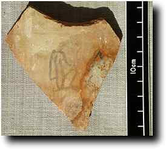
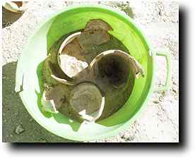
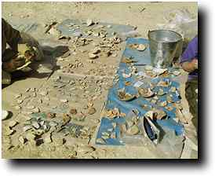
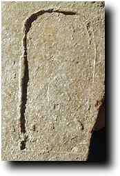
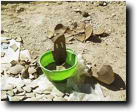

The Dig Diary 1999--Part 2 |
Saturday 4 DecemberWork continues on sorting the potsherds from Senneferi's burial. By mid-morning, we have sorted all the different levels into their fabric types. The next stage is to start joining the sherds, but before we do that we have to write the find spots on them, so that we can still see where they came from after they are back in their original pots. This takes more than an hour, and is not the most enjoyable of tasks. We then start the joining, beginning with the canopic jar fragments. Readers may recall from last year that we found some ceramic canopic lids, and so we are now trying to find the jars. We realise that the signs we spotted on some sherds last year are names of some of the four sons of Horus (Hapy at left here), who are associated with the jars and protect their contents. The adjacent photo shows how fragments being joined are stood in a sand tray until they set. In the back of the tomb, John continues to plough through the coffins. He sorts the bags of fragments into different boxes by date, and this way we can all get a pretty good idea of the way the material is turning out. There is a small amount of 21st dynasty stuff, quite a lot of 22nd dynasty, lots of 25th dynasty, and still quite a lot of the 26th dynasty. Nothing has yet turned up before or after that. |
Sunday 5 DecemberWe spend a short time working on the canopic fragments. We have now located sherds with parts of the names of all four sons of Horus; these are written horizontally on the pot, with no further text, not even the name of the owner. However, we are not making a lot of progress, and need a change, so we get out the other marl clay sherds. Soon things start to click, and all three of us are making joins. By the end of the day we have substantial parts of nearly ten pots, and the number of sherds has decreased dramatically. Coffin sorting continues. 25th dynasty fragments are still in the lead, but 22nd and 26th seem to be catching up! |
Monday 6 DecemberYet more of the same. We continue for half the morning with the marl clay vessels, and make up quite a few more. There are a number of pieces missing from them, so presumably there are a number of sherds elsewhere in the burial, perhaps in the antechamber to the burial. However, most of them are now in a state which can be drawn, and so we move back to the canopics. We have found more pieces in the meantime, and work proceeds on building them, but very slowly. It is clear that we do not have enough sherds at present for four vessels, even though we have four names and parts of four bases! John has today finished the material from the shafts at the rear of the tomb (1993-5), and will now move on to other material. He has found one 18th dynasty fragment from inside the tomb. |
Tuesday 7 DecemberAfter our 'success' with the marls, we move to dealing with the four bags of oasis amphora sherds. Again we have to write the context numbers on them, but by 8:00 we are sorting them. It's quite difficult, as there is no decoration to help, and we aren't quite sure of the size. Work progresses slowly, and we think we have five examples, each with a slightly different fabric, perhaps just due to the firing. I was about to give up on one vessel when Abdel-Rahman made a few joins which made all the difference. We have substantial parts of two assembled by the end of the day. On one sherd is a stamped cartouche of Menkheperre (Thutmose III), although this is unlikely to be clear in the photo. At the back of the tomb, John has finished all the material from inside the tomb, and he now begins to re-examine each group. The first was the 21st dynasty fragments, which are few and insubstantial in number, and appear to be those of one man and one woman. Perhaps the burial was destroyed and later removed, leaving just a few fragments? In the evening Pamela Rose and Alan Clapham arrive from Aswan, having been delayed a bit by difficulties with preparations for the next season at Qasr Ibrim. |
|
All text and images © Nigel Strudwick 1999
|
© Nigel Strudwick 1997-2016